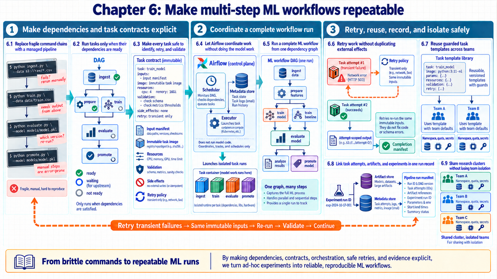
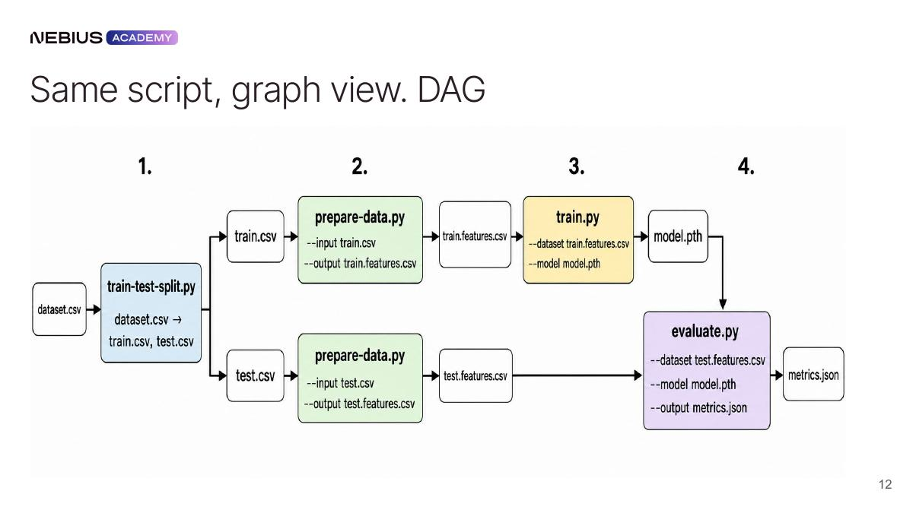
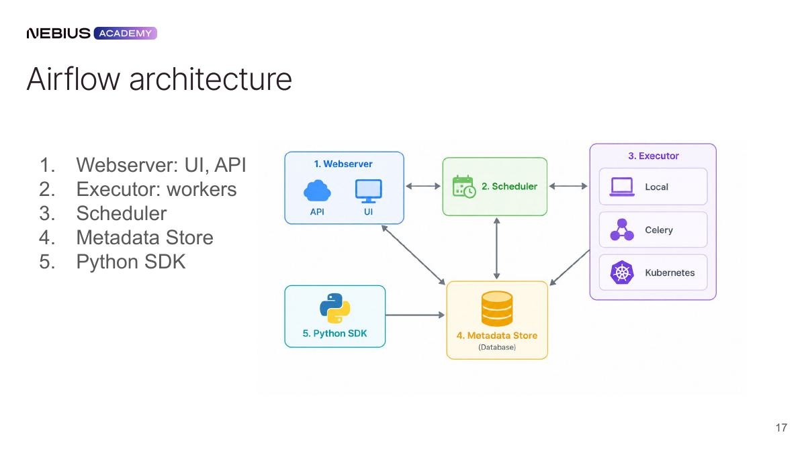
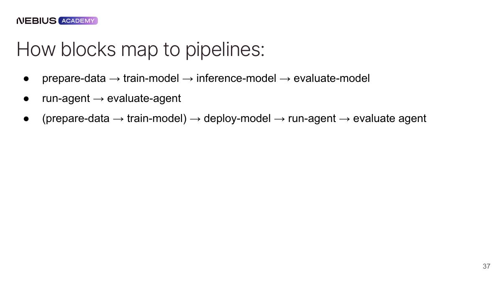
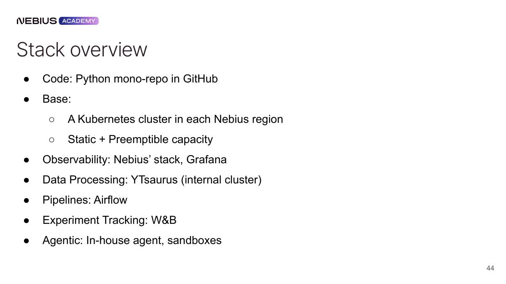
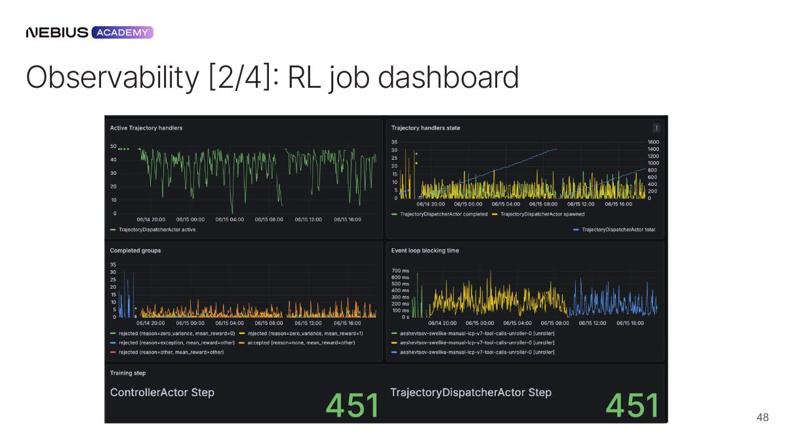

6 Running repeatable ML workflows
How can the system reproduce a multi-step ML result after partial failure, schedule delay, code change, or operator handoff? Chapter 5 established durable artifacts and rebuildable derived state. Dependency graphs replace manual command sequences with tasks that have explicit inputs, outputs, resources, retries, and evidence.
The map connects a pipeline DAG to its execution engine, then to the reusable and governed components that make the workflow durable.
Chapter map: repeatable ML workflows
This chapter orchestrates multi-step machine learning pipelines:
- 6.1–6.3 Pipelines as DAGs & Task Contracts: Replace brittle manual scripts with Directed Acyclic Graphs (DAGs), and define immutable task inputs, outputs, and parameters.
- 6.4–6.5 Airflow Architecture & ML Workflows: Describe Airflow component roles and a retrieval workflow skeleton using KubernetesPodOperator tasks for validation, embedding, and evaluation.
- 6.6–6.9 Idempotent Tasks, Run Manifests & Multi-Tenancy: Implement safe retries, atomic state transitions, and execution evidence manifests, while isolating multi-tenant research environments on shared clusters.

6.1 From manual scripts to automated pipelines
A single script can run ingestion, training, evaluation, and deployment in sequence. As the workflow grows, bespoke scripts must implement durable coordination for parallel branches, selective retries, backfills, resource placement, responsibility, and persistent run state. An orchestrator supplies reusable mechanisms for that work rather than making it impossible in one process. Dependency definitions stay separate from execution, and task-attempt state persists across failures.
- Pipeline: A reproducible set of tasks and dependencies that transforms versioned inputs into versioned outputs while recording execution state.
Orchestration is not the model code. It decides when a task is eligible, where it runs, how the system records its state, and what happens after failure. The task implementation performs domain work such as preprocessing or training. The artifact store carries large outputs. The metadata store carries orchestration state and small references.1
| Concern | Ordered script | Orchestrated pipeline |
|---|---|---|
| Failure | Restart manually or add ad-hoc checkpoints | Retry or resume the failed task under policy |
| Parallelism | Manual process management | Independent branches run concurrently |
| History | Logs scattered by process | Persistent runs, attempts, owners, and timestamps |
| Scheduling | External cron or operator | Calendars, events, backfills, and concurrency limits |
| Resources | Inherited host environment | Per-task image, CPU, memory, GPU, queue, and secrets |
| Lineage | Implicit file names | Versioned input/output references and run identity |
6.2 Scheduling task dependencies with directed acyclic graphs
The workflow separates responsibilities. The orchestrator still needs an unambiguous rule for which tasks may run and which work can happen in parallel. Tasks are nodes, and prerequisite relationships form directed edges without cycles.
- Directed Acyclic Graph (DAG): A graph whose directed edges encode dependency order and whose lack of cycles means that a topological execution order exists.2

In this data contract, A → B means B requires A’s validated output, and A does not invoke B directly. Airflow edges instead govern eligibility through task state and trigger rules, so artifact readiness needs an explicit check. Independent branches can execute concurrently. A cycle has no valid strict dependency order and is normally rejected by a DAG system. Feedback over time belongs in separate runs or external events.
\[ T_{\mathrm{DAG}} \ge \max_{p \in P} \sum_{i \in p} t_i \tag{6.1}\]
Critical path calculation: scheduling duration in a branched DAG
For a finite DAG with fixed task durations and finish-before-start dependencies, the longest path is a completion-time lower bound. Equality requires enough resources and no omitted queue, transfer, or retry delays:3
- Shared start: Validation takes 4 minutes.
- Training branch: Training takes 38 minutes and model evaluation takes 8 minutes.
- Retrieval branch: Embedding takes 20 minutes and index validation takes 6 minutes.
- Shared release: The promotion gate takes 3 minutes after both branches finish.
- Path sums: Adding the task durations gives 53 minutes for the training path and 33 minutes for the retrieval path.
- Conclusion: The 53-minute training path controls the lower bound, accelerating the 33-minute branch alone cannot reduce end-to-end time below 53 minutes.
Workflow analysis: critical path scheduling implications
Identifying workflow bottleneck dependencies directs pipeline optimization efforts:
- Doubling workers does not accelerate a strictly serial chain. With fixed dependencies and durations, shortening the longest paths reduces the lower bound. Tied critical paths may need joint improvement, and changed resource waits or task internals require a new calculation.
- A slow off-path task can still consume capacity and delay later runs, so capacity and critical-path analysis remain separate.
6.3 Defining immutable task inputs and outputs
The DAG states dependency order. A box named ‘train’ is still too vague to retry safely or reproduce after an image, dataset, or configuration changes. Every task has immutable inputs, explicit outputs, resource needs, failure behavior, and validation.
Task specification: The complete contract for one pipeline task: identity, immutable inputs, outputs, runtime, resources, retry behavior, validation, and side effects.
Idempotent task: A task whose repeated execution with the same declared inputs reaches the same externally visible result without corrupting state or duplicating effects.4
Named task fields make repeatability inspectable by both the scheduler and the next task.
| Task field | Example | Why it matters |
|---|---|---|
| Identity | train_model:v7 plus code commit |
Connects implementation to a run |
| Inputs | Dataset manifest, base checkpoint, config hash | Prevents dependence on mutable ‘latest’ paths |
| Outputs | Checkpoint URI, metrics URI, completion manifest | Makes downstream dependencies inspectable |
| Runtime | Immutable image and entry point | Identifies image-contained dependencies; record host and external dependencies separately |
| Resources | 8 GPUs, 96 CPU, 1 TB memory, fabric constraint | Enables placement and capacity decisions |
| Retry policy | Two retries for temporary infrastructure failure, no retry on schema error | Separates recoverable from deterministic failure |
| Validation | Schema, counts, hashes, metric bounds | Prevents success from meaning only exit code zero |
| Side effects | Registry alias update or notification | Requires deduplication, transaction, or manual gate |
Large objects bypass the orchestration metadata database and inter-task message fields. The artifact store holds them, while tasks pass a small immutable reference plus integrity metadata.5 Each task writes to a unique attempt or generation path, validates its output, and conditionally publishes a completion pointer after validation, and only then reports task success. Section 6.6 supplies the required shared-store and stale-attempt rules.
6.4 Coordinating workflow runs with Airflow
Task descriptions explain what each directed acyclic graph (DAG) node does. A concrete orchestrator still needs components that parse definitions, create runs, choose ready tasks, launch executors, and expose state. Airflow’s components map to those responsibilities around the DAG file.

The component map assigns each Airflow process one control-plane responsibility before the implementation example.
This description follows the Airflow 3.3.1 documentation checked September 16, 2026. The separate DAG processor parses definitions, the scheduler contains the executor, the API server exposes the UI/API, and a triggerer is needed when deferrable operators are used. Earlier Airflow layouts can differ from these documented roles.6
| Airflow component | Ownership |
|---|---|
| DAG processor | Imports Python definitions and serializes valid DAG structure |
| Scheduler | Creates scheduled runs, evaluates dependencies, and queues eligible task instances |
| Executor | Within the scheduler, dispatches tasks to the selected local or remote execution backend |
| Workers / task pods | Task execution in the selected environment with reported state |
| Metadata database | Persists run, task, attempt, and scheduling state; secrets can use external backends |
| API server | Displays graph, grid, logs, controls, and run history |
| Artifact/log backends | Task logs and large domain outputs outside scheduler state |
| Triggerer (when used) | Runs triggers for supported deferrable operators |

The UI is a view of persisted state, not the execution engine. A success state can follow normal operator completion or manual marking, so it does not prove that domain checks ran or that the model is good. DAG-run status also depends on leaf states and trigger rules: a permissive successful leaf can mask an earlier failure. Release gates therefore consume explicit validation evidence, not merely a green run.7 Domain validation belongs inside task descriptions and release gates.
6.5 Running complete ML workflows in Airflow
The control-plane roles and task description are explicit. The Python definition describes dependencies without performing expensive work during import. Lightweight DAG parsing leaves domain code to isolated task runtimes.
Code example: Airflow dependency/runtime skeleton with external constants. No explicit retries or complete publication protocol are shown; KPO does not require KubernetesExecutor.
from airflow import DAG
from airflow.providers.cncf.kubernetes.operators.pod import (
KubernetesPodOperator,
)
from datetime import datetime
with DAG(
dag_id="versioned_rag_release",
start_date=datetime(2026, 1, 1),
schedule=None,
catchup=False,
max_active_runs=1,
tags=["mlops", "rag"],
) as dag:
validate = KubernetesPodOperator(
task_id="validate_sources",
image=PIPELINE_IMAGE,
cmds=["python", "-m", "pipeline.validate"],
arguments=["--manifest", DATASET_MANIFEST],
)
embed = KubernetesPodOperator(
task_id="build_embeddings",
image=PIPELINE_IMAGE,
cmds=["python", "-m", "pipeline.embed"],
arguments=[
"--manifest", DATASET_MANIFEST,
"--embedding-version", EMBEDDING_VERSION,
],
)
evaluate = KubernetesPodOperator(
task_id="evaluate_retrieval",
image=PIPELINE_IMAGE,
cmds=["python", "-m", "pipeline.evaluate"],
arguments=["--suite", EVAL_SUITE, "--candidate", COLLECTION_ID],
)
validate >> embed >> evaluateCode walkthrough: Airflow dependency and runtime skeleton
Declarative pipeline definitions specify idempotent task execution and failure recovery:
- DAG definition: The
DAGobject stores scheduling and concurrency policy,schedule=Nonedisables automatic time scheduling, while runs can be triggered through the UI, API, CLI, or other control paths. - Concurrency guard:
max_active_runs=1limits overlapping runs of this DAG. It is not a lock against other DAGs, operators, or delayed external actions changing the production alias.8 - Task runtime: Each
KubernetesPodOperatorlaunches a pod for domain work after DAG import and does not require KubernetesExecutor.PIPELINE_IMAGEmust actually be digest-pinned, and host/runtime dependencies remain separate.9 - Artifact lineage: Task arguments carry dataset, embedding, evaluation-suite, and candidate-collection identities.
- Dependency state: The shift operators create validation → embedding → evaluation edges, Airflow records each task instance and attempt.
- Result: The scheduler owns eligibility and task state, while isolated containers own validation, embedding, and evaluation work.
- Limits: The uppercase constants and domain programs are supplied externally. This snippet has no explicit retry policy. A production DAG still needs explicit output manifests, retries by failure class, secrets and service accounts, resource requests, timeouts, alerts, and a separate gated promotion task.
Orchestration principle: DAG import performance safeguards
Maintaining lightweight DAG definitions protects orchestrator scheduler performance:
- Import-time dataset downloads, GPU initialization, external API calls, and large namespace scans slow parsing and can make scheduler health depend on external systems.
- The DAG processor repeatedly parses definitions. Expensive import-time work can delay parsing and scheduling visibility, while one failed import does not imply that every DAG is broken.10
6.6 Safe re-execution and idempotent tasks
The example DAG can launch isolated tasks. Retries and historical runs will repeat code, so ambiguous partitions and irreversible side effects can duplicate or overwrite production state. Each run is bound to a logical data interval or immutable release identity, while computation and promotion remain separate.
| Mechanism | Safe pattern | Failure to avoid |
|---|---|---|
| Retry | Attempt-scoped output, validation, then one committed generation | Appending duplicate rows or partially replacing a model |
| Backfill | The run’s logical interval and versioned upstream snapshot | Reading today’s mutable input for an old date |
| Catchup | Enable only when every historical interval is meaningful and resourced | Accidental flood of years of runs |
| Sensor / wait | Supported deferrable operator plus triggerer and timeout; pool policy remains configurable | Occupying a worker while polling indefinitely |
| External API | Idempotency key with persisted response identity | Duplicate billing, notification, or deployment |
| Promotion | Policy gate and conditional shared-store update after validation | A retried compute task silently deploys |
Retries distinguish transient infrastructure failures from deterministic code or data failures. Exponential backoff helps a temporary dependency recover, it does not fix a schema mismatch. After the retry budget, the task state, relevant logs, input identities, and responsible component remain visible without reconstructing the run from a terminal.
Idempotency walkthrough: safe partition task retry without duplicate writes
The protocol uses staged immutable output and conditional publication, not a formal two-phase commit protocol:
- Attempt 1: Partition 07 writes to an attempt-scoped path, loses its worker, and remains uncommitted.
- Eligibility: The configured retry policy or task code classifies the failure as retryable and preserves the same logical interval and input manifest. The scheduler does not infer arbitrary domain failure classes.11
- Attempt 2: The task writes a new generation, validates row counts and hashes, and emits one completion record keyed by task, interval, and input identity.
- Commit: A coordinator uses a durable publication key comprising task, interval, and input identity. A conditional create or compare-and-set selects one immutable winner and rejects stale attempts. If the response is lost, recovery reads the winner record and recognizes an already committed result before any retry. The selected generation is then validated against the intended pointer version. A late attempt cannot overwrite it without satisfying that same condition.12
- Conclusion: Attempt-scoped outputs and one publication step keep retries from duplicating or partially replacing state.
6.7 Building reusable task templates
Retry behavior and artifact publication are now safe. Teams still lose consistency when every DAG reimplements data validation, distributed training, inference, evaluation, and registration differently. Parameterized task blocks package common responsibilities through stable inputs, outputs, checks, and platform defaults.13

Each reusable block has named inputs, committed outputs, and validation checks.14
| Block | Consumes | Produces | Primary gate |
|---|---|---|---|
| Data validation | Source snapshot and schema | Validated manifest and profile | Schema, counts, drift, policy |
| Training | Dataset, base model, config, image | Checkpoint and training evidence | Finite loss, throughput, checkpoint integrity |
| Batch/online inference | Serving bundle and input set | Outputs and traces | Interface, latency, errors |
| Evaluation | Outputs, references, evaluator version | Metrics, slices, failed cases | Quality/safety thresholds |
| Registry | Validated artifact and metadata | Immutable version and lineage | Completeness and signatures |
| Deployment | Approved serving bundle | Candidate endpoint and rollout state | Health, canary, rollback |
In the platform contract, a reusable block should standardize identity, evidence, secrets, resource requests, telemetry, and output publication while allowing task-specific domain parameters. This division lets a model team change architecture without reimplementing cluster scheduling or artifact lineage.
6.8 Recording artifact evidence in run manifests
The pipeline can produce versioned artifacts through reusable blocks. Five systems now record overlapping facts, and copying all data into every system obscures the authoritative record. Each evidence class has one primary system, and stable identifiers connect the records.
| System | Canonical responsibility | Cross-link |
|---|---|---|
| Orchestrator | DAG run, task attempts, dependency state, schedule, retries | Experiment run ID and artifact URIs |
| Experiment tracker | Parameters, metrics, model/evaluator versions, comparable research runs | DAG/task ID and deployment candidate |
| Artifact/registry store | Immutable files, manifests, versions, promotion aliases | Producer run and consumer release |
| Observability backend | Service logs, metrics, traces, alerts, incidents | Serving bundle, DAG run, experiment and request IDs |
| Evaluation store | Versioned cases, references, raw judgments, slice reports | Experiment, bundle, dataset and evaluator IDs |
A pipeline task can start an experiment run and emit its ID. The tracker records comparable parameters and metrics. The task publishes artifact URIs and commits its status. A later deployment writes the serving-bundle ID into traces. The same identifiers let an incident move backward from one request to its bundle, evaluation report, experiment, DAG run, and source artifacts.
Architecture boundary: authority mapping across systems
The responsibility map reduces ambiguity. It does not make cross-system writes atomic:
- The orchestrator is authoritative for task attempts and dependency state, the experiment tracker is authoritative for comparable parameters and metrics, the artifact registry is authoritative for immutable files and promotion aliases, telemetry is authoritative for runtime observations, the evaluation store is authoritative for cases and raw judgments.
- Cross-links join these records without copying one system’s mutable state into another. A run manifest records the identifiers and the producer or consumer relationship.15
If artifact publication succeeds but a tracker update fails, a durable pending-link record keeps the missing update visible. A reconciliation task retries that link and checks the selected generation. The authoritative record and any delayed mirror remain distinguishable during recovery.
6.9 Isolating teams on shared research clusters
One pipeline has clear responsibilities and evidence. A research organization adds concurrent users, shared clusters, queues, secrets, quotas, interactive work, long-running training, and repeated evaluation. Code, compute, storage, observability, orchestration, and experiment systems collaborate while retaining distinct roles.

A shared research platform combines Git-hosted code, containerized workloads, Kubernetes scheduling, shared and object storage, telemetry, pipeline control, and experiment tracking. Interactive work and scheduled jobs can use the same immutable images and artifact identities, allowing an exploratory result to become a repeatable run.

A live dashboard correlates system evidence with algorithm-specific roles such as actors, learners, and trajectories. Operators need queue time, pod state, GPU/fabric/storage evidence, checkpoint health, and task logs. Researchers need reward, loss, sample efficiency, rollout length, evaluation quality, and experiment comparisons. Shared run and artifact identities connect both views.
Tenant boundary
- A shared cluster needs tenant-specific namespaces or projects, quotas, queue limits, service accounts and RBAC, enforced network policies, storage IAM/ACLs, and trace-store authorization. A prefix is an organizational name, not an access barrier. Mutually untrusted code can require stronger node, sandbox, or cluster separation.16
- Run and artifact identities remain globally traceable, while payload access follows tenant policy. A scheduler quota alone does not prevent one team from reading another team’s checkpoints or traces.17
Chapter 6 summary
Key orchestration and workflow principles established in this chapter:
- Core mechanisms: Declarative Apache Airflow DAGs and KubernetesPodOperator task runtimes, idempotent task execution, execution evidence run manifests.
- Governing tradeoffs: Fine-grained task isolation overhead vs. debuggability, DAG re-run speed vs. strict state immutability, shared cluster resource utilization vs. tenant isolation.
- Failure modes & defenses: Atomic state transitions, immutable artifact hashing, tenant resource quotas and queue concurrency limits.
Chapter checkpoint
Review the self-study questions in Appendix C, Section C.1 (Questions 20, 21, and 22) to test understanding of workflow orchestration, idempotent task retries, and multi-tenant resource quotas before examining the complete operational case.
Carry-forward result
The system now expresses work as a DAG of idempotent task descriptions, stores artifacts outside control-plane metadata, joins orchestration with experiments and telemetry, and supports selective retry and recovery.
The final chapter applies every layer to one grounded-answer evaluator service and follows a constructed quality regression from detection to verified release.
Baylor, D., Breck, E., Cheng, H.-T., Fiedel, N., Foo, C. Y., Haque, Z., Haykal, S., Ispir, M., Jain, V., Koc, L., Koo, C. Y., Lew, L., Mewald, C., Modi, A. N., Polyzotis, N., Ramesh, S., Roy, S., Whang, S. E., Wicke, M., … Zinkevich, M. (2017). TFX: A TensorFlow-based production-scale machine learning platform. In Proceedings of the 23rd ACM SIGKDD International Conference on Knowledge Discovery and Data Mining (pp. 1387–1395). ACM. DOI: 10.1145/3097983.3098021. Author paper. TFX Section 2 describes coordinated components and shared platform services. The exact metadata/artifact split here is a design choice, not proof that all orchestration systems behave this way. Link checked September 16, 2026.↩︎
Sedgewick, R., & Wayne, K. (n.d.). Shortest paths: Critical path method (Author-maintained online companion to Algorithms, 4th ed., Addison-Wesley, 2011). Official source. The authors’ algorithm companion describes finite DAG scheduling and longest paths. The guarantee concerns graph order, not availability of runtime resources or artifacts. Link checked September 16, 2026.↩︎
Sedgewick, R., & Wayne, K. (n.d.). Shortest paths: Critical path method (Author-maintained online companion to Algorithms, 4th ed., Addison-Wesley, 2011). Official source. The critical-path implementation assumes fixed-duration precedence-constrained jobs and sufficient processors. It supplies an ideal bound, not a measured ML-pipeline completion time. Link checked September 16, 2026.↩︎
Apache Software Foundation. (n.d.). Best practices (Airflow 3.3.1 documentation observed September 16, 2026). Official source. Airflow best practices recommend repeatable task outcomes and partition-specific inputs. Idempotent visible effects do not require byte-identical stochastic intermediate computation. Link checked September 16, 2026.↩︎
Apache Software Foundation. (n.d.). XComs (Airflow 3.3.1 documentation observed September 16, 2026). Official source. Airflow XComs are intended for small serializable values, with configurable backends. Passing a URI does not itself validate or retain the referenced payload. Link checked September 16, 2026.↩︎
Apache Software Foundation. (n.d.). Architecture overview (Airflow 3.3.1 documentation observed September 16, 2026). Official source. The Airflow 3.3.1 architecture separates DAG processor, scheduler/executor, API server, database, and optional workers/triggerer. No installed runtime or screenshot was certified against that version. Link checked September 16, 2026.↩︎
Apache Software Foundation. (n.d.). Dag runs (Airflow 3.3.1 documentation observed September 16, 2026). Official source. Dag Runs documents manual success marking and leaf-based run status, including permissive trigger-rule exceptions. The release-gate policy is an additional application requirement. Link checked September 16, 2026.↩︎
Apache Software Foundation. (n.d.). Configuration reference (Airflow 3.3.1 documentation observed September 16, 2026). Official source. The concurrency setting is per DAG. It does not provide shared-store coordination for external alias publication. Link checked September 16, 2026.↩︎
Apache Software Foundation. (n.d.). KubernetesPodOperator (Kubernetes provider 10.22.0 documentation observed September 16, 2026). Official source. KubernetesPodOperator launches pods through the Kubernetes API and does not require KubernetesExecutor. An image variable alone does not prove digest pinning, retries, or idempotent side effects. Link checked September 16, 2026.↩︎
Apache Software Foundation. (n.d.). Best practices (Airflow 3.3.1 documentation observed September 16, 2026). Official source. The official best-practices guide warns against costly or unreliable top-level code. Current process ownership is given by the separate 3.3.1 architecture citation. Link checked September 16, 2026.↩︎
Apache Software Foundation. (n.d.). Tasks (Airflow 3.3.1 documentation observed September 16, 2026). Official source. The task documentation describes configured retries and exception policy. Domain classification and preserved input manifests must be supplied by application code/policy. Link checked September 16, 2026.↩︎
Amazon Web Services. (n.d.). How to prevent object overwrites with conditional writes (Amazon S3 User Guide). Official source. Conditional writes provide an object-level precondition. The durable publication key, winner record, read-back, and stale-attempt rules add application controls. They do not establish exactly once execution or a cross-system transaction. Link checked September 16, 2026.↩︎
Kubeflow Authors. (2024, June 20). Data types (Kubeflow Pipelines documentation). Official source. Kubeflow documents typed parameter/artifact interfaces. Type compatibility alone does not validate semantic schema, artifact quality, or upgrade compatibility. Link checked September 16, 2026.↩︎
Kubeflow Authors. (2024, August 27). Create components (Kubeflow Pipelines documentation). Official source. Kubeflow component definitions package logic and I/O for reuse. Committed publication and validation checks are additional platform requirements. Link checked September 16, 2026.↩︎
Moreau, L., & Missier, P. (Eds.). (2013, April 30). PROV-DM: The PROV data model. W3C Recommendation. Source. PROV-DM defines use, generation, derivation, and responsible agents. It does not prescribe this five-system split or prevent partial cross-system writes. Link checked September 16, 2026.↩︎
Kubernetes Authors. (2025, May 22). Multi-tenancy (Kubernetes documentation). Official source. Kubernetes documents RBAC, network/storage controls, quotas, and trust-sensitive isolation. NetworkPolicy requires an enforcing plugin, and namespace membership alone is not a hostile-code boundary. Link checked September 16, 2026.↩︎
Amazon Web Services. (n.d.). Examples of Amazon S3 bucket policies (Amazon S3 User Guide). Official source. S3 bucket policies illustrate principal/action/resource authorization. Storage permissions and trace-store authorization are separate from scheduler capacity quotas. Link checked September 16, 2026.↩︎